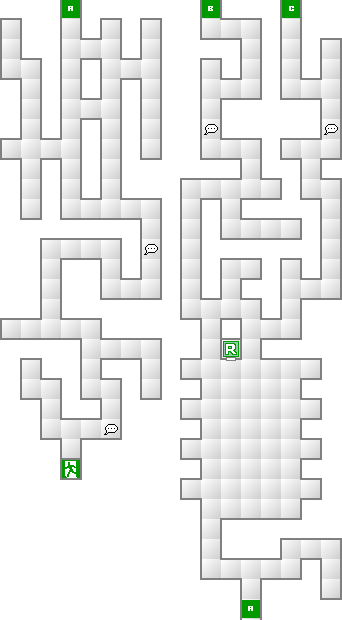
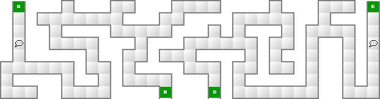
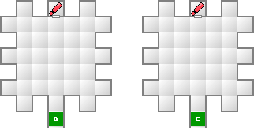

ナオミは圧倒的な強さを誇るので道中は特に問題は無い。
ここではティアマトかアプスーのどちらか一方を倒すだけでクリアとなるが、倒したほうによってラスボスの能力が変化する。
分かれ道を右に行くと神霊アプスー。左へ行くと神霊ティアマトと戦うことになる。
| 能力 | LV73 HP9564 MP2237 力16 知19 魔27 耐21 速11 運10 |
|---|---|
| 特技 | アギ アギラオ ブフ ジオ |
| メギド ネクロ・ドグマ サンダーボルト |
| 能力 | LV74 HP11119 MP178 力25 知16 魔19 耐24 速09 運12 |
|---|---|
| 特技 | 体当たり 押しつぶし 大暴れ メガトンプレス |
| 悪魔名 | 火炎 | 氷結 | 電撃 | 衝撃 | 破魔 | 呪殺 | 万能 |
|---|---|---|---|---|---|---|---|
| 精神 | 神経 | 魔力 | 打撃 | 斬撃 | 技 | 銃撃 | |
| 神霊ティアマト | 50 | 50 | 50 | 50 | 無効 | 無効 | 100 |
| 無効 | 無効 | 50 | 150 | 150 | 150 | 150 | |
| 神霊アプスー | 150 | 150 | 150 | 150 | 無効 | 無効 | 100 |
| 無効 | 無効 | 無効 | 50 | 50 | 50 | 50 |
基本的な戦い方は、まず観世音の済度を使って最大HPを増強し、ティアマトなら戦の魔王、アプスーならくりからの黒龍を使用していけば問題ない。ギリギリまで粘ろうとせず、HPが400以下になったらすぐに回復しよう。


